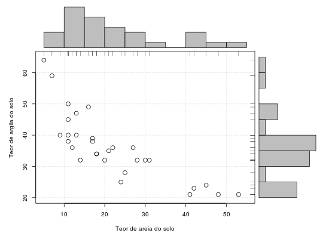

Conjunto de dados referente aos teores de areia e argila de uma amostra com 30 parcelas de solo de capoeira nova na Amazônia.
Um data.frame com 30 observações e 2 variáveis, em que
areiaargilaFERREIRA (2011), Exemplo 5.1 pág. 193-194.
data(FerreiraEg5.1)#> Warning: data set ‘FerreiraEg5.1’ not foundstr(FerreiraEg5.1)#> 'data.frame': 30 obs. of 2 variables: #> $ areia : int 11 13 18 16 11 30 5 7 11 17 ... #> $ argila: int 38 47 34 49 45 32 64 59 50 38 ...pairs(FerreiraEg5.1)bks <- apply(FerreiraEg5.1, 2, FUN = function(x, step = 5) { r <- range(x) r <- r + (r %% step * (-1)) + c(0, step) seq(r[1], r[2], by = step) }) areiaPlot <- hist(FerreiraEg5.1$areia, plot = FALSE, breaks = bks$areia) argilaPlot <- hist(FerreiraEg5.1$argila, plot = FALSE, breaks = bks$argila) layout(matrix(c(2, 0, 1, 3), ncol = 2, byrow = TRUE), widths = c(4/5, 1/5), heights = c(1/5, 4/5)) par(mar = c(5, 5, 0.5, 0.5)) plot(argila ~ areia, data = FerreiraEg5.1, cex = 1.5, xlab = "Teor de areia do solo", ylab = "Teor de argila do solo", xlim = range(bks$areia), ylim = range(bks$argila)) grid() rug(x = FerreiraEg5.1$areia, side = 3) rug(x = FerreiraEg5.1$argila, side = 4) par(mar = c(0, 5, 1, 0.5)) barplot(areiaPlot$counts, axes = FALSE, space = 0) par(mar = c(5, 0, 0.5, 1)) barplot(argilaPlot$counts, axes = FALSE, space = 0, horiz = TRUE)